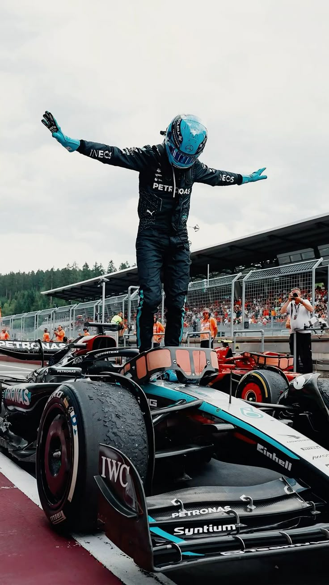
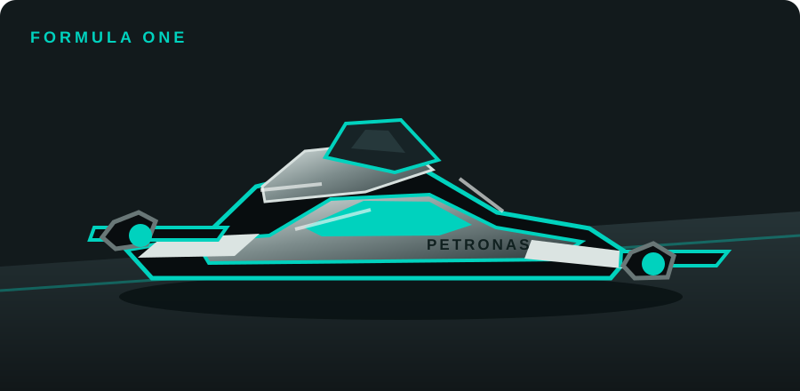

O trabalho da equipe
Pilotos, engenheiros e mecânicos trabalham juntos antes e durante cada Grande Prêmio. As decisões sobre pneus, ajustes e estratégia são parte essencial da competição.
Mercedes-AMG PETRONAS Formula One Team
Conheça um pouco do universo da Fórmula 1 com as cores da Mercedes: preto, prata e o marcante turquesa Petronas.
Uma equipe, muitos detalhes
A Fórmula 1 é uma categoria internacional de automobilismo em que equipes e pilotos competem em circuitos ao redor do mundo. Cada corrida é chamada de Grande Prêmio e faz parte de um campeonato disputado ao longo da temporada.
Além de velocidade, a F1 exige estratégia, trabalho em equipe e engenharia de alta precisão. Cada parada nos boxes pode fazer a diferença: um segundo vale muito na pista!
Explore os links oficiais
A Mercedes tem uma longa história no automobilismo e voltou a competir na Fórmula 1 como equipe de fábrica em 2010. A equipe combina experiência nas pistas com o desenvolvimento constante de novas soluções para seus carros.
Pilotos, engenheiros e mecânicos trabalham juntos antes e durante cada Grande Prêmio. As decisões sobre pneus, ajustes e estratégia são parte essencial da competição.
O visual do site destaca o preto, o prata e o turquesa inspirado pela Petronas, criando uma identidade ligada à equipe e à velocidade.

Um carro de F1 é projetado para ser rápido, seguro e eficiente. A aerodinâmica ajuda a manter o carro estável, enquanto os pneus e as configurações são escolhidos de acordo com o circuito e as condições da corrida.

Visite os sites oficiais para acompanhar notícias, equipes e resultados da Fórmula 1: